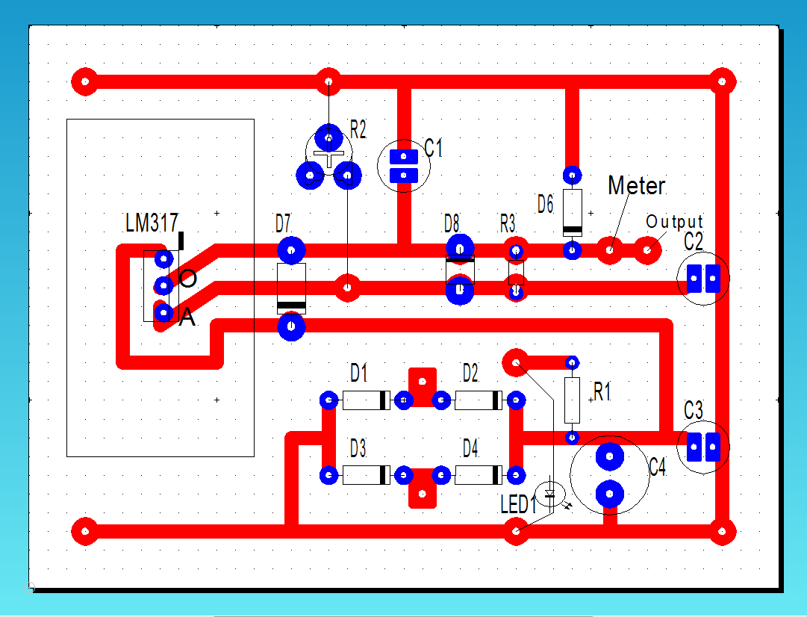
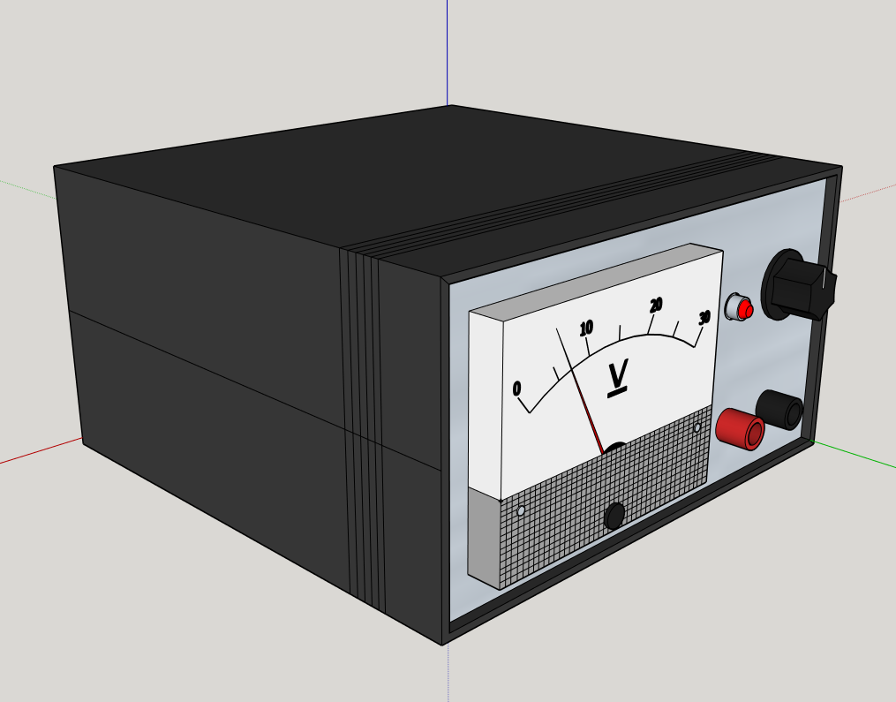
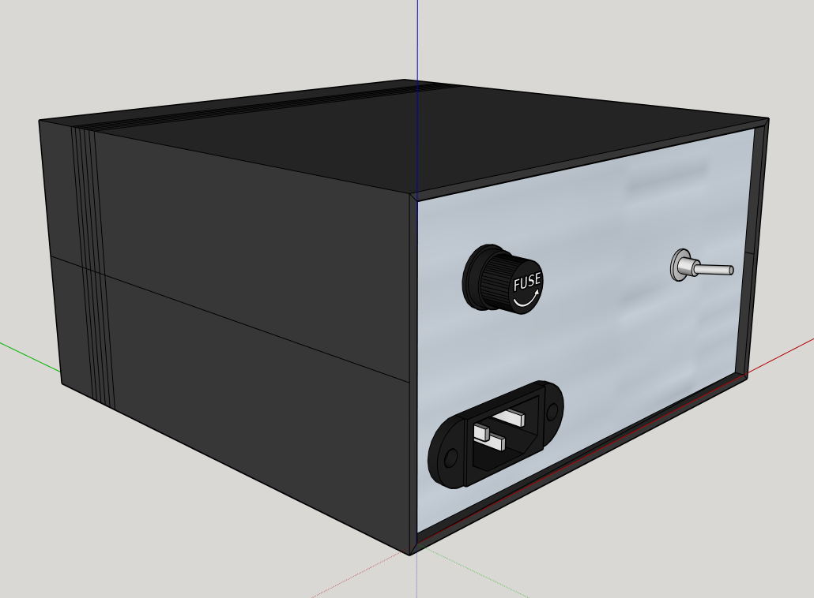
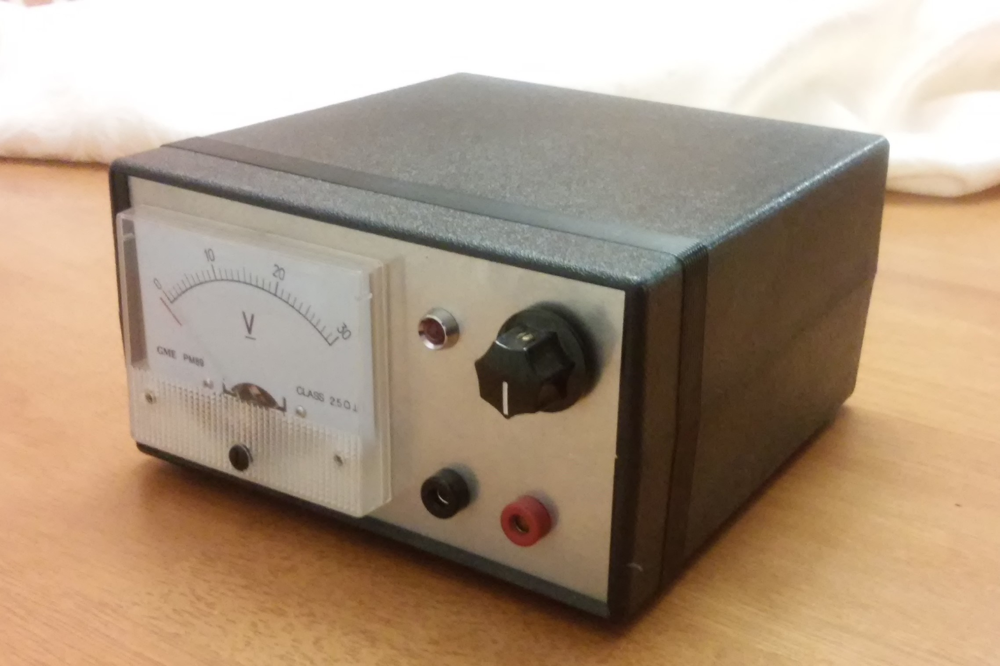
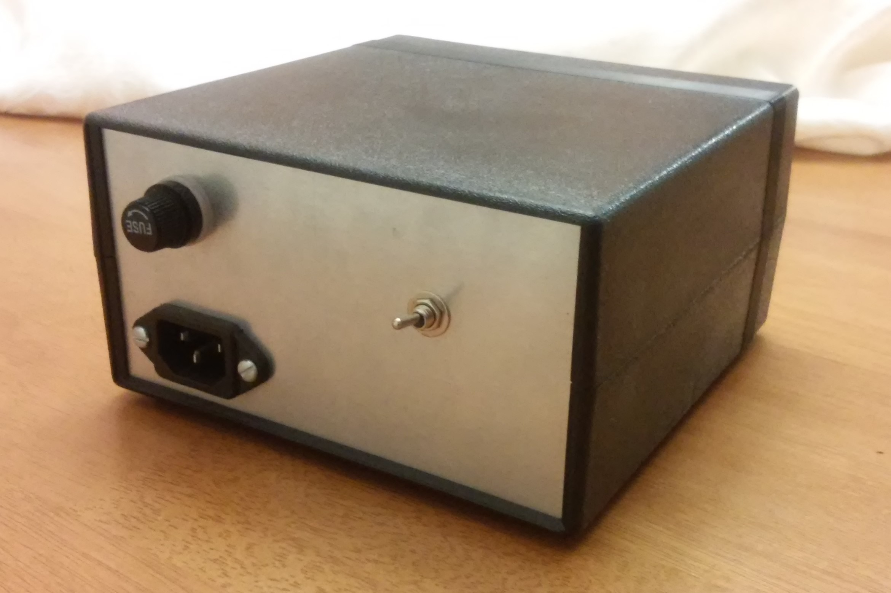

While working on this project, I learned a lot more about exactly how each part of the power supply circuit operates. I had learned about the transformer, rectifier and filter before, but dealing with them hands on shed new light on their functions for me. It had been a little stressful working with the milling machine to try to get an adequate printed circuit board, since I had to worry about if my circuit design was good or if there were any shorts in the board itself, but in the end it saved me room in my enclosure and looked pretty neat. I also became very well-acquainted with the continuity check function on the orange multimeters we have, since I had to check my board as much as I did. My favorite part was designing my project box and iguring out how I would put everything together. Having all the parts come together neatly and securely was very satisfying, especially when everything worked liked it should have. The end result was a 30V variable power supply that worked quite well.
    